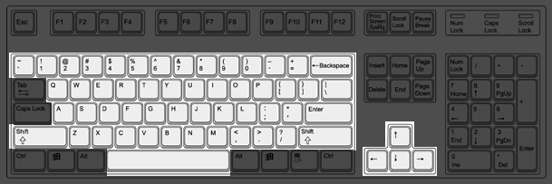
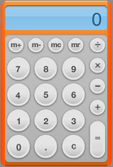
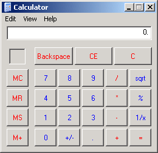

Sometimes I feel like every time I come up with a good idea, I read about it somewhere else a week later. It least it’s nice to have some indication I’m not a raving lunatic. This time, A List Apart suggests Paper Prototyping, just what I was talking about a week ago.
Tag: User Interfaces
To Operate Shower DO NOT PULL HANDLE
I went and got a massage last week. After being relieved of a great deal of muscle tension and no small sum of money, I returned to the spa’s locker room to take a shower. On the wall of the shower stall was hung a sign, about a foot square, printed with large block letters: “To operate shower DO NOT PULL HANDLE turn handle sideways.” I followed the instructions and was rewarded with a refreshing stream of hot water.
The shower handle was a little loose on its bearings. Clearly the establishment has suffered repeated instances of unintended property damage when their customers yanked in frustration on a handle that was designed to be turned, not pulled. But here’s the thing: the handle looks like it was meant to be pulled. It’s a flattened oval extending forward from a central knob. It looks like one of those kitchen sink faucets that you lift up to turn on.
Doubtless printing the sign was cheaper than replacing the shower fixture, so the owners of the spa went with the sign. But consider the same circumstances applied to software. How often are people told “just don’t do that,” or “it’s not designed to work that way”? It’s probably not that much cheaper to “educate” a generation of users than to fix the software to work the way the users expect. Of course, for the untold legions of tech support staff stuck supporting closed-source software, fixing the problem is not an option. But for anything open-source or developed in-house, it potentially is.
So here’s an idea for a software development model. I just made this up; maybe companies already do it. Have a user and a designer sit down together. Let them play with bits of paper — yes, paper — on which are printed mock-ups of each screen in the software being developed. User “clicks” on something, designer shows the result and asks if it’s what the user expected. Pages can be copied, ripped apart, and taped back together as necessary. If something is missing, the designer sketches it right there and adds it to the pile. Videotape this whole process, and give the videotape to the developers, who then write an application that does exactly what the user wants. Repeat for each update or new feature.
No mock-up or screen shot or demo is sufficient if you can’t interact with it. You need to find out what people think Button X will do, as opposed to what it “should” do. If someone’s using software the wrong way, maybe it should be designed differently.
Personal experience: At one job I had, after the web content-management system got upgraded with cool JavaScript rich-text editing widgets, they discovered that what everyone really wanted to do was cut and paste from Microsoft Word. Of course, Word’s funky HTML screwed up the cool widget. “Don’t paste from Word,” they said. Ours’ not to reason why…
LaTeX for the Rest of Us
I really like LaTeX. So much so that I bought a used copy of the original LaTeX “blue book” just so I could write a class file to print my freshman English papers in MLA format, which requires breaking most of the typesetting rules that make LaTeX output look so professional to begin with.
But there’s no question about the ugliness of LaTeX (or plain TeX) source. At times it borders on incomprehensible. LyX helps, but only if you like LyX’s editor.
When I was an office temp I saw dozens of people struggle to typset 100+ page documents in Microsoft Word. Word is a pretty powerful tool, but it’s just not up to the task. Small, maddening inconsistencies appear that are difficult to correct. Large documents require a lot of memory and cause crashes. And when you have multiple people working on the same document, only one of whom understands how to use styles properly, it becomes nightmarish.
The trouble with WYSIWYG is that what you see is all you get. Why should an author — who should only be thinking about the content, not the presentation — be faced with decisions about line and page breaks while working on a first draft?
So here’s what I want: an editor that looks and feels like Microsoft Word, but that only permits structural editing — section headings, emphasis, etc. Then use TeX or a similar typesetting system to generate printed documents. To make this useful to a general audience, one would also need a “style editor” to modify the behavior of the typesetter.
The problem with this is that the idea of “structural editing” seems quite alien to a lot of computer users. People like WYSIWYG. They want to work on screen with something that looks like a finished document. I believe this is actually a very inefficient way to work, since one is distracted by formatting concerns from the actual writing, but I don’t know how to convince anyone else of this. But if the “structural editor” could be styled to match the user’s expectations of what the final document will look like, we could have the best of both worlds. Writers will be able to work in an environment they already know and feel comfortable with, and editors and publishers will be spared the frustration of fixing formatting inconsistencies introduced by writers.
Lodged Net
I just returned from a short vacation with a little business mixed in. On the third day of my trip, I realized I needed to check my email. My hotel had free in-room Ethernet connections, but I hadn’t thought to bring my laptop with me. No problem, I thought, since the hotel also had one of those TVs with a wireless keyboard for web browsing. So I turned on the television, punched buttons for Internet access, and accepted the $9.95 charge for 24 hours’ use — a little steep, I thought, but I was only going to use it once.
To my dismay, the service was barely usable. The Web browser in the television seemed to be about Netscape 3.0 level, unable to render new-fangled sites like my ISP’s web mail. Half the text was hidden off the left side of the screen, and there was no horizontal scroll bar. To make matters worse, it operated at dial-up speeds. As I watched the “progress” bar creep along the bottom of the screen, I reflected on why WebTV never caught on. I think it’s because no one ever bothered to get it right before other technologies — small, cheap laptops with WiFi — took over.
Down With Upper Case
Slashdot: War Declared on Caps Lock Key
A good idea. And while we’re at it, let’s dump those silly Ctrl and Alt keys. Who uses them? F1 – F12 can certainly be abandoned, as well as that triumvirate of uselessness, Print Screen / Scroll Lock / Pause. Don’t get me started on Microsoft’s “Windows” and “Menu” keys (or Apple’s “Apple” key). “Insert” has outlived its usefulness, and Page Up/Down were obsoleted by scroll-wheels. That leaves “Home” and “End,” which I could live without. “Delete” is kind of redundant if you have “Backspace.” “Tab” never works the way you want it to. “Escape” is a false hope. And number keypads are an obvious waste of space. What does that leave us with? This:

I’m not being entirely facetious here. Most of the keys on a modern computer keyboard are relics of some older technology, be it a typewriter (tab, caps lock) or a text terminal (scroll lock). They increase the likelihood of typing mistakes and make computers look more intimidating than they need to.
Of course, there will always be some user screaming if you remove his favorite key, so it’s easier to keep the legacy keys than remove them. And for power users, mouse-driven interfaces still can’t match the speed of Escape Meta Alt Control Shift. This will have to change, and I think it will with large, multiple-contact, flexible touch screens. Keyboards will stick around for a long time, because there’s nothing better for getting a lot of text down fast, and the tactile response is important. But they will be more “peripheral,” stripped down to their essential function and used only occasionally.
Abstract Interfaces
Office 2003 uses a table of 1500 colors to render the user interface. That’s 1500 different colors designers have to choose for each color scheme. Overkill? Probably. But it says something about commercial software that sets it apart from most open-source software. Despite the greater theme/skin-ability of KDE, Gnome, and friends, open-source GUIs tend to look less “polished” than big commercial ones. To be fair, the same could be said of an awful lot of shareware and commercial software from smaller companies. The fact is, only a huge company like Microsoft has the resources to pay professional designers just to pick colors all day.
Can independent developers compete? I think they can, with a different approach. By adopting a standard API for interfaces that goes beyond the usual widget set to encompass entire interaction paradigms, developers of many different applications can all take advantage of a consistent interface. Then that interface can be beautified by a relatively small number of designers.
I’m not talking about user-interface guidelines like the Gnome and KDE projects have, I’m talking about abstracting the entire interface away from application programming.
Emacs provides a simple example that goes in the same vein: If you are writing an Elisp application to run inside Emacs, you do not need to provide an interface to set user preferences for that application. You only need to describe the user-customizable variables and their possible values, then Emacs itself renders those options in a customize buffer, which will look and act consistent with every other Emacs customize buffer.
Now, Emacs is text-based and programmer-oriented, and the customize interface reflects that. But there’s no reason why the same concept cannot be applied to graphical interfaces. Suppose, instead of writing classes for MyAppMainWindow, MyAppMenuBar, and MyAppToolBar, you just specify “My App manipulates Foo objects. It provides the following functions: Qux Bar Baz. It can read and write Foo objects as plain text or XML. It has these user preferences: 1 2 3.” In other words, specify the hooks into the application’s functionality and let the GUI framework worry about things like where to position controls in a dialog box.
Creating such a sophisticated framework would not be easy, but I believe it could be done, and would open up possibilities for faster application development with more sophisticated interfaces.
Finger-Painting on a Computer Screen
Another blog named Digital Digressions (nuts, and it looks like she used it first, too) points to a video demo of a touch screen with multiple contact points. This is the interface I want! Everything on the screen responds to touch. You can move things around, zoom or resize, stretch, pull, and “play” with objects on the screen using both hands. I think something like this will be a big part of future computer interfaces, perhaps combined with thin, flexible displays. I can’t wait.
Now I just need a more original name for my own site.
Zooming Interfaces
I really like the idea of Zooming Interfaces. I think they provide a better solution to having multiple documents/objects on the screen than the current overlapping-window pattern. The demo linked above has some pretty severe limitations, but even so I found it easier and more enjoyable to explore than a web site with a comparable number of documents on separate pages.
For a slightly wilder example, try Dasher, a keyboard replacement based on zooming letters. (The Java applet did not work for me on Firefox 1.5.0.6 on Windows.)
WriteRoom – Long Live the Console
Christian Neukirchen (A.K.A. Anarchaia) pointed out a Mac OS X app called WriteRoom (there’s a Windows twin called Dark Room). It’s a full-screen text editor with absolutely no word processing features. No bold, no italic, no paragraph formatting, just text. As the introduction says:
Walk into WriteRoom and your busy computer life fades away. The distractions of e-mail, the web, and your thousand desktop icons are gone. Only you and your text remain. This is a place where work gets done and procrastination has no place.
Very interesting, since what I dislike most about modern GUI apps is the “thousand icons” approach — every edge of the screen stuffed with row upon row of buttons, menus, icons, palletes, scrollbars, pop-up reminders, status messages, and clocks, all there to prove to you how incredibly feature-packed this amazing piece of software is. When I want to work on serious writing, I fire up Emacs full-screen. WYSIWYG is great for preparing a document for printing, but it’s incredibly distracting. In my day job I spend hours just removing formatting inadvertantly introduced when a writer hit CTRL instead of SHIFT.
What’s funny about WriteRoom is how much it looks like an old text terminal, green-on-black text and all. Maybe it really is true that everything comes back into fashion if you wait long enough.
Consistently Inconsistent
Apple’s new Dashboard Widgets bother me. Not in a usability sense — they look quite useful, especially if they can be brought in and out of view quickly. What bothers me is that every widget looks completely different. Reading about user interfaces, the one clear mantra appears to be “consistency, consistency, consistency.” The Dashboard has inconsistency all over the place. Widgets have different colors, different borders, and even different GUI controls. Furthermore, the whole concept of a Widget breaks the consistent idea of what an application is.
Now, I’m not a Mac user. But a friend who is explained why she likes the Widget concept: things that are different should look different. So, I asked, does that mean that a window containing a web browser should look different from a window containing a word processor? Yes, she said.
This certainly makes writing window managers a lot more challenging. But it makes sense. A music player and an FTP client have almost nothing in common, so why should they have similar interfaces?
What it boils down to is this: some people “see the interface” and others don’t. A programmer or designer can look at an application interface and think, “Okay, that’s a combo box, that’s an adjustable frame border, that’s a button.” But users only see words, colors, and shapes. They know that clicking the mouse on certain words or shapes will produce a given effect, but they rarely understand the difference between, say, an icon on the desktop and a button on the toolbar. Why do you double-click the former but single-click the latter? Who knows. I’ve seen plenty of regular computer users who double-click everything, just in case.
(Update 26 July 2007: On second read, that was pretty rude of me. My point is not that users are stupid — it’s that no one should have to think about the difference between an icon on the desktop and a button on the toolbar. You should just be able to get on with whatever you’re doing.)
Getting back to Apple’s Widgets, they are all specialized tools. Each does a single task — calculator, address book, weather report, etc. They are not general-purpose applications, so it doesn’t make sense to put them on the same footing in the interface. For example, I almost never use the Windows Calculator because it takes too long to launch and the interface — using the default system font and colors — is hard to read. In contrast, the Dashboard calculator has a larger display and uses standard calculator symbols for multiply and divide rather than * and /. It is less consistent with the rest of the Mac GUI, but is more consistent with our notion of calculators.
So perhaps interfaces should be consistently inconsistent. Turns out there’s even a paper about this, written by Jonathan Grudin in 1989: The Case Against User Interface Consistency.